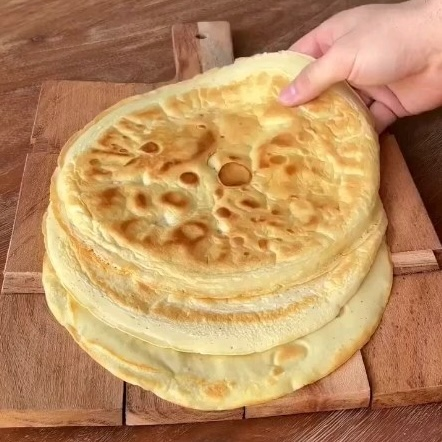

Tortilla Wrap
Ingredientes:
- 18 g Harina
- 80 g Claras de Huevo
- Ajo en polvo al gusto
- Aceite en spray
Instrucciones:
- En vaso para licuar añade la harina, las claras, el ajo y el aceite.
- Licua por unos segundos.
- Vierte la mezcla en un sartén en fuego medio y cocina por 2 a 3 minutos por cada lado
- Cubrir la tortilla en una toalla de té.